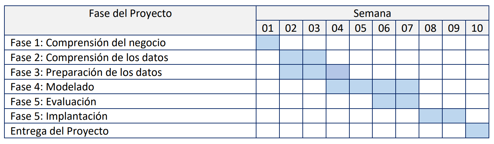

Fase 1
Definir el proyecto y el conjunto de datos
De una campaña masiva de préstamos personales a una estrategia inteligente basada en datos.
Introducción – El Problema de Negocio
¿Qué decisión quiere tomar el banco?
Una entidad bancaria desea aumentar la conversión de su campaña de préstamos personales. Para ello, construiremos todo el flujo de valor: exploraremos los datos, identificaremos las variables que más influyen en la decisión de compra, prepararemos la información y entrenaremos modelos de Machine Learning (como regresión logística y árboles de decisión) para responder a una pregunta de negocio muy sencilla pero de enorme impacto:
“Dado el perfil y la relación actual de un cliente con el banco, ¿comprará o no un crédito personal si se lo ofrecemos?”
La decisión de negocio consiste en a quién dirigir la campaña (segmentación) y con qué intensidad (priorización), maximizando el retorno (ROI) y minimizando el contacto a clientes con baja propensión.
Preguntas clave de negocio
El proyecto de ciencia de datos buscará responder, entre otras, a estas preguntas:
- Probabilidad de aceptación: ¿Cuál es la probabilidad de que un cliente acepte un préstamo personal?
- Drivers de la conversión: ¿Qué variables explican mejor la aceptación (por ejemplo, ingresos, uso de tarjeta, educación)?
- Umbral operativo: ¿Cómo fijar un cut-off para priorizar la campaña y estimar el ROI esperado?
Objetivo general
Visión global
- Desarrollar un sistema de análisis y predicción de propensión para préstamos personales.
Objetivos específicos
Acciones concretas
- Realizar un análisis exploratorio y de calidad de datos.
- Entrenar y evaluar modelos (regresión logística y árboles de decisión / gradient boosting).
- Definir métricas específicas para evaluar la calidad del modelo de clasificación (ROC-AUC, Precision@K, Lift, curva de ganancias).
- Diseñar un informe empresarial con resultados o un dashboard ejecutivo para soporte a decisión.
Fuentes de datos
Descripción del dataset
A partir de los registros internos del banco se construye una muestra de 5.000 clientes reales (debidamente anonimizados), recopilando para cada uno información clave de negocio:
Perfil del cliente
Edad, ingresos, años de experiencia laboral, nivel educativo, estado civil, etc.
Relación con el banco
Presencia de hipoteca, uso de banca online, seguros, tarjetas, saldos medios, productos contratados.
Respuesta a la campaña
Variable objetivo: si aceptó o no el crédito personal ofrecido en la última campaña.
No se trata de una base teórica, sino del histórico de una campaña real: de esos 5.000 clientes, solo 480 (un 9,6 %) dijeron “sí” al préstamo. Ese comportamiento pasado es el que se aprovechará para anticipar resultados futuros.
Con esta información, el banco plantea un reto muy concreto: ser capaz de predecir, antes de lanzar la campaña, qué clientes tienen alta probabilidad de aceptar un crédito personal. Así, marketing puede invertir el presupuesto donde realmente tiene retorno:
- Segmentando mejor a quién se contacta.
- Personalizando mensajes según el perfil.
- Reduciendo el coste por conversión de cada nuevo préstamo concedido.
Esta es la historia que hay detrás de la data: una campaña real, un presupuesto limitado y una decisión clave para el banco: usar la analítica avanzada para hablar con las personas adecuadas, en el momento adecuado y con la oferta adecuada.
Plan de Trabajo
El proyecto seguirá una estructura por fases, desde el entendimiento del problema hasta la evaluación del modelo en negocio.
Metodología
¿Cómo se hará el análisis inicial de los datos?
El análisis inicial se enfocará en comprender la estructura de la base de clientes del banco y en identificar patrones tempranos relacionados con la aceptación del préstamo personal. En una primera fase, se realizará un Análisis Exploratorio de Datos (EDA) con doble enfoque:
- Análisis descriptivo del cliente: distribución de edad, ingresos, experiencia laboral, nivel educativo y otros atributos demográficos para entender la composición de la cartera.
- Análisis del comportamiento financiero: productos contratados, uso de banca online, presencia de hipotecas, saldos medios y otras variables que caracterizan la relación del cliente con el banco.
Posteriormente, se investigarán las diferencias entre los clientes que aceptaron el préstamo y los que no lo aceptaron, identificando señales tempranas que indiquen propensión. Se analizarán correlaciones, importancia preliminar de variables, presencia de valores atípicos y consistencia de la información.
¿Qué técnicas se usarán?
Dado que la variable objetivo del proyecto —aceptar o no el crédito personal— es dicotómica (binaria), el proyecto empleará principalmente modelos de clasificación supervisada.
En primera instancia, se considerarán modelos lineales, modelos de árboles y métodos de boosting, complementados con la selección del umbral óptimo mediante curvas Precision–Recall y maximización del beneficio esperado. Este enfoque permite tanto interpretar el comportamiento del cliente como obtener un modelo altamente predictivo para priorizar adecuadamente la campaña.
Entregables del proyecto
- Documento PDF con el análisis, resultados y conclusiones de negocio.
- Notebook (R/Python) con el código utilizado para el análisis y modelado.
- Dashboard o resumen ejecutivo con indicadores clave para el área de marketing y dirección.
Tecnología y herramientas
Gestión de datos
Archivos CSV locales y bases de datos SQL.
Lenguajes y librerías
Plataforma de desarrollo
RStudio como entorno principal de trabajo.
Control de versiones
Git y GitHub.
Referencias
Kaggle · Metodología CRISP-DM · Documentación oficial de librerías de Machine Learning.
Fase 2
Organización y Entendimiento de Datos
Para garantizar una correcta gestión y organización de la información del proyecto, se creó una base de datos relacional en SQLite.
Trabajo con Bases de Datos
Creación de la tabla
CREATE TABLE clientes_prestamo (
id_cliente INT PRIMARY KEY,
edad INT,
experiencia INT,
ingresos INT,
codigo_postal INT,
familia INT,
saldo_promedio FLOAT,
educacion INT,
hipotecario INT,
acepto_prestamo INT,
cuenta_valores INT,
cuenta_plazo_fijo INT,
uso_banca_online INT,
tarjeta_credito INT
);2) Ingresos promedio según aceptación
SELECT acepto_prestamo,
AVG(ingresos) AS ingresos_promedio
FROM clientes_prestamo
GROUP BY acepto_prestamo;Aceptó.Préstamo Ingreso.Promedio..miles.USD. ---------------- ----------------------------- NO 66.23739 SÍ 144.74583
1) Distribución de aceptación del préstamo
SELECT acepto_prestamo, COUNT(*) AS total_clientes
FROM clientes_prestamo
GROUP BY acepto_prestamo;Aceptó.Préstamo Total.Clientes ---------------- --------------- NO 4520 SÍ 480
3) Uso de banca online y aceptación del préstamo
SELECT uso_banca_online,
COUNT(*) AS total_clientes,
SUM(acepto_prestamo) AS aceptaron,
SUM(acepto_prestamo)*1.0/COUNT(*) AS tasa_aceptacion
FROM clientes_prestamo
GROUP BY uso_banca_online;Usa.Banca.Online Total.Clientes Aceptaron Tasa.Aceptación ----------------- --------------- ---------- ---------------- NO 2016 189 0.0937500 SÍ 2984 291 0.0975201
4) Hipoteca y probabilidad de aceptar el préstamo
SELECT hipotecario,
COUNT(*) AS total_clientes,
SUM(acepto_prestamo) AS aceptaron,
SUM(acepto_prestamo)*1.0/COUNT(*) AS tasa_aceptacion
FROM clientes_prestamo
GROUP BY hipotecario;
Tiene.Hipoteca Total.Clientes Aceptaron Tasa.Aceptación
--------------- --------------- ---------- ----------------
0 3462 312 0.0901213
75 8 1 0.1250000
76 12 1 0.0833333
77 4 0 0.0000000
78 15 0 0.0000000
79 11 0 0.0000000
80 7 0 0.0000000
81 13 1 0.0769231
82 10 1 0.1000000
83 16 0 0.0000000
Lectura y Entendimiento de los Datos
Lectura del dataset en R
install.packages("readr") library(readr) clientes <- read_csv("../data/raw/Model_creditoPersonal.csv") cat("<pre>\n", pretty_sql_table(head(clientes)), "\n</pre>")
ID Age Experience Income ZIP.Code Family CCAvg Education Mortgage Personal.Loan Securities.Account CD.Account Online CreditCard --- ---- ----------- ------- --------- ------- ------ ---------- --------- -------------- ------------------- ----------- ------- ----------- 1 25 1 49 91107 4 1.6 1 0 NO SÍ NO NO NO 2 45 19 34 90089 3 1.5 1 0 NO SÍ NO NO NO 3 39 15 11 94720 1 1.0 1 0 NO NO NO NO NO 4 35 9 100 94112 1 2.7 2 0 NO NO NO NO NO 5 35 8 45 91330 4 1.0 2 0 NO NO NO NO SÍ 6 37 13 29 92121 4 0.4 2 155 NO NO NO SÍ NO
Descripción de variables principales
- Age: Edad del cliente.
- Income: Ingreso anual del cliente (miles USD).
- Experience: Años de experiencia laboral.
- CCAvg: Gasto promedio mensual con tarjeta de crédito.
- Education: Nivel escolar (1: No graduado, 2: Graduado, 3: Profesional).
- Mortgage: Valor hipotecario (miles USD).
- Personal Loan: Variable objetivo (0 = No, 1 = Sí).
- Online: Uso de banca digital.
- CreditCard: Posee tarjeta emitida por otro banco.
Sobre la fuente de datos
El dataset proviene de una campaña real donde se ofreció un préstamo personal a 5,000 clientes del banco. Contiene tanto datos demográficos como financieros, así como la respuesta final del cliente.
Fase 3
Análisis Exploratorio de Datos (EDA)
En esta fase dejamos de ver el dataset como una tabla y empezamos a verlo como una historia de clientes. Cada gráfico responde a una pregunta de negocio: ¿quiénes son nuestros clientes?, ¿cómo se comportan?, ¿y qué distingue a los pocos que aceptan el préstamo personal del gran grupo que lo rechaza?
Análisis Univariado
Empezamos analizando cada variable por separado para hacernos una idea del “paisaje general” de la cartera: edad, ingresos, gasto con tarjeta y, sobre todo, cuántos clientes aceptaron realmente el préstamo personal. Esto nos ayuda a responder primero al “¿cómo es nuestra base?” antes de entrar en relaciones más complejas.
Distribución de la Edad

El histograma de Age nos muestra que la mayoría de los clientes se concentra entre los 35 y los 55 años. La edad mínima es de 23 años y la máxima de 67, con una mediana de 45 años.
Qué nos dice este gráfico:
- No estamos ante una base dominada por jóvenes muy endeudados ni por jubilados, sino por personas en plena etapa laboral, donde suelen aparecer necesidades como vivienda, educación de hijos o proyectos personales.
- La distribución es bastante “limpia”, sin picos raros ni valores extremos absurdos. Esto es bueno: la variable edad parece fiable y coherente.
Posible inconsistencia: cuando más adelante cruzamos Age con Experience, vemos algo importante: ambas variables están casi perfectamente correlacionadas (correlación ≈ 0,99). Es decir, prácticamente cuentan lo mismo: edad y años de experiencia laboral avanzan juntos. Para el modelado, esto nos alerta de una posible multicolinealidad: incluir las dos tal cual no aporta mucha información nueva y puede complicar modelos lineales.
Ingresos Anuales (Income)
La variable Income está medida en miles de USD al año. La media ronda los 74 mil USD y la mediana está en 64 mil USD. Los cuartiles son aproximadamente:
- 25% de los clientes gana menos de 39 mil USD.
- El 50% está por debajo de 64 mil USD.
- El 75% está por debajo de 98 mil USD.
- El 10% más rico supera los 145 mil USD.
La distribución es claramente asimétrica a la derecha: muchos clientes con ingresos medios y una cola de clientes con ingresos muy altos.
Qué nos dice este gráfico:
- El banco trabaja sobre todo con clientes de ingresos medios, pero hay un segmento de alto poder adquisitivo que podría ser clave para productos de préstamo (tickets más grandes, menos riesgo, más rentabilidad).
- La cola de altos ingresos sugiere que habrá outliers que debemos vigilar: no están mal, pero pueden dominar estadísticas si no se tratan con cuidado.
Gasto promedio con tarjeta (CCAvg)
El histograma de CCAvg nos muestra cómo se comporta el gasto promedio mensual con tarjeta entre los clientes. La mayor parte se concentra en valores relativamente bajos: la mediana está alrededor de 1,5 mil USD, y tres de cada cuatro clientes gastan menos de 2,5 mil USD al mes. Sin embargo, aparece una cola hacia la derecha: un grupo más reducido de clientes llega a gastar por encima de 4–5 mil USD mensuales.
En términos de negocio, este gráfico nos cuenta dos cosas:
- La mayoría de la base tiene un uso moderado de la tarjeta, lo que se corresponde con clientes que probablemente utilizan el crédito para gastos cotidianos, pero sin un nivel de endeudamiento extremo.
- El pequeño grupo de clientes con gasto muy alto representa un segmento especialmente interesante: son usuarios intensivos de crédito, más familiarizados con financiar su consumo y, como veremos en el análisis bivariado, mucho más propensos a aceptar un préstamo personal.
Este histograma, combinado con el de Income, sugiere que ingresos y estilo de consumo van de la mano: a mayor capacidad económica, suele aparecer un patrón de gasto más alto, que abre la puerta a productos de financiación como el préstamo personal.
Variable objetivo: Aceptación del Préstamo (Personal.Loan)
X0 X1 ----- ---- 4520 480
La tabla de Personal.Loan es el primer golpe de realidad: de los 5000 clientes, solo 480 aceptaron el préstamo en la campaña previa, es decir, un 9,6%. Los otros 4520 clientes (90,4%) rechazaron la oferta.
Qué nos dice esta tabla:
- El problema es un caso clásico de clase desbalanceada: el evento que queremos predecir (aceptar el préstamo) es minoritario.
- Un modelo “tonto” que dijera siempre “no acepta” acertaría el 90% de las veces, pero sería un desastre para el negocio porque no identificaría a nadie con interés real.
- Desde ya sabemos que tendremos que cuidar las métricas de evaluación (no sólo accuracy) y posiblemente aplicar técnicas para tratar el desbalance (ponderación de clases, resampling, etc.).
Análisis Bivariado
Una vez entendidas las variables individualmente, el análisis bivariado responde a: “¿qué rasgos comparten los clientes que sí aceptan el préstamo?”. Aquí comparamos la variable objetivo con variables clave y empezamos a ver patrones de segmentación.
Ingresos vs. Aceptación del Préstamo
El diagrama de cajas de Income por estado de Personal.Loan es muy revelador: la caja de los clientes que aceptan el préstamo está desplazada hacia ingresos bastante más altos.
Si dividimos los ingresos en cuatro grupos (cuartiles), la imagen se vuelve muy clara:
- En el cuartil más bajo de ingresos (< 39 mil USD), prácticamente nadie acepta el préstamo.
- En el segundo y tercer cuartil (entre 39 y 98 mil USD), la tasa de aceptación sube pero sigue siendo baja (en torno al 2–3%).
- En el cuartil más alto (> 98 mil USD), la tasa de aceptación se dispara hasta alrededor del 35%.
Qué nos dice este boxplot:
- El préstamo personal no es un producto masivo en toda la base, sino algo que resuena especialmente en clientes de ingresos medio-altos y altos.
- Desde el punto de vista del negocio, la segmentación por ingresos es prácticamente obligatoria: tiene poco sentido atacar con la misma intensidad a todos los clientes.
- Más adelante, en la fase de modelado, Income será una variable central: está fuertemente correlacionada con la aceptación del préstamo (correlación ≈ 0,50).
Gasto con Tarjeta (CCAvg) vs Aceptación

El boxplot de CCAvg por aceptación muestra un patrón similar: los clientes que aceptan el préstamo presentan un gasto medio con tarjeta claramente superior, con una cola más larga hacia valores altos.
Si hacemos el mismo ejercicio de cuartiles:
- En los tres primeros cuartiles de gasto (CCAvg ≤ 2,5 mil USD) la tasa de aceptación es baja: alrededor del 3%.
- En el cuartil superior de gasto (CCAvg > 2,5 mil USD), la tasa de aceptación sube a casi el 29%.
Qué nos dice este boxplot:
- El préstamo personal tiene más tracción en clientes que ya son usuarios intensivos del crédito a través de la tarjeta.
- De cara a campañas futuras, tiene sentido priorizar a clientes con gasto en tarjeta alto: ya están acostumbrados a financiar parte de su consumo con el banco.
- A nivel estadístico, CCAvg también está fuertemente vinculada a Income (correlación ≈ 0,65). Es decir, ingresos y gasto se mueven juntos; a la hora de modelar tendremos que controlar esta relación para evitar redundancias.
Otras relaciones relevantes (sin gráfico, pero clave)
Además de los diagramas anteriores, el análisis cruzado de la variable objetivo con otras variables categóricas nos da pistas muy útiles:
- Educación: la tasa de aceptación es de apenas 4–5% en el nivel educativo más bajo, pero sube hasta alrededor del 13–14% en niveles medios y altos. Es decir, a mayor educación, mayor probabilidad de contratar el préstamo.
- Family (tamaño de familia): las familias de tamaño 3–4 muestran tasas de aceptación algo mayores (en torno al 11–13%) que las familias de 1–2 miembros (≈7–8%). Podría estar capturando mayores necesidades de gasto (hijos, vivienda más grande, etc.).
- Online: alrededor del 60% de los clientes usa banca online. La tasa de aceptación entre usuarios online y no online es muy similar (≈9–10%), por lo que la relación existe pero es bastante débil. No parece ser el gran driver de decisión, aunque sí puede ser una palanca comercial (canal para ofrecer el producto).
- Securities / CD / Mortgage: tener otros productos de inversión o hipoteca se asocia con una ligera mayor aceptación, pero de nuevo el efecto es menor comparado con Income o CCAvg. Indican una relación más profunda con el banco, pero no son el factor decisivo.
Problemas detectados en los datos
Antes de modelar, es fundamental preguntarse: “¿podemos confiar en lo que estamos viendo?”. En este dataset no hay valores perdidos (NA), pero sí encontramos varios puntos de atención:
-
Desbalance de clases: sólo el 9,6% de los clientes (480 de 5000)
aceptó el préstamo. Esto obliga a:
- Elegir métricas adecuadas (recall, precision, AUC) y no sólo accuracy.
- Considerar técnicas específicas (ajuste de pesos, sobremuestreo, etc.).
-
Experiencia laboral negativa: se detectan
52 registros con Experience < 0 (valores -1, -2 y -3 años).
Son claramente errores de registro, ya que nadie puede tener
experiencia laboral negativa. Habrá que decidir si:
- Se imputan (por ejemplo, igualando Experience a Age - 18), o
- Se eliminan esos pocos registros para no contaminar el modelo.
-
Redundancia entre Age y Experience: la correlación entre ambas
es ≈ 0,99. Esto indica que prácticamente miden lo mismo,
lo que puede generar multicolinealidad en modelos lineales.
Probables soluciones:
- Usar solo una de las dos en el modelo final, o
- Crear una variable derivada (por ejemplo, “edad – experiencia”) con interpretación más clara.
-
Cola larga en ingresos y CCAvg: los valores muy altos de
Income y CCAvg son plausibles, pero actúan como outliers.
Pueden distorsionar modelos sensibles (por ejemplo, KNN o regresiones sin
estandarizar), por lo que sería recomendable:
- Escalar variables, o
- Aplicar transformaciones (log) o winsorización.
-
ZIP Code potencialmente poco informativo: es una variable
categórica con muchos niveles y pocos registros por código. Tal y como está,
es difícil que aporte valor al modelo sin complicarlo. Es candidata a:
- Ser eliminada, o
- Ser agrupada en zonas más grandes (regiones, clusters).
¿Qué nos dicen los datos?
Si juntamos todas las piezas, los datos nos cuentan una historia bastante clara sobre el cliente que acepta el préstamo personal:
- Perfil económico: tiene ingresos por encima de la media (a menudo en el cuartil superior, > 98 mil USD) y un gasto en tarjeta elevado (cuartil alto de CCAvg).
- Relación con el banco: suele ser un cliente que ya utiliza productos de crédito (tarjeta) y en muchos casos tiene hipoteca u otros productos, lo que indica una relación más consolidada con la entidad.
- Capital humano: los niveles educativos medios y altos concentran las tasas de aceptación más elevadas. No sólo gana más, sino que también parece entender mejor el producto y su utilidad.
- Contexto familiar: las familias de tamaño 3–4 tienen una aceptación algo mayor, probablemente por más necesidades de gasto financiable (educación, vivienda, coche, etc.).
- Uso de canales: el uso de banca online está algo más presente en los que aceptan, pero con un efecto pequeño. Es más una pista de dónde contactarles (canal digital) que un gran driver de decisión.
En resumen, el análisis exploratorio transforma el dataset en un retrato: el cliente “típico” que acepta el préstamo personal es alguien de edad madura (40–50 años), con ingresos medio-altos, gasto elevado en tarjeta, buen nivel educativo y una relación ya activa con el banco. A partir de este retrato, la siguiente fase será construir un modelo predictivo capaz de identificar, dentro del 90% que hoy dice “no”, a aquellos que en la próxima campaña se comportarán como este cliente de alta propensión.
Análisis de Regresión
Próximamente
Análisis de Regresión Logística
Próximamente
Analisis de Conglomerados
Próximamente